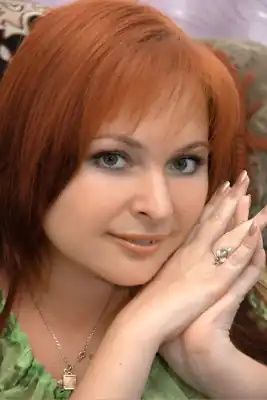
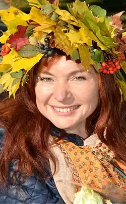
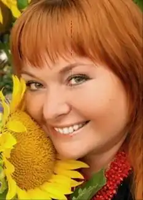
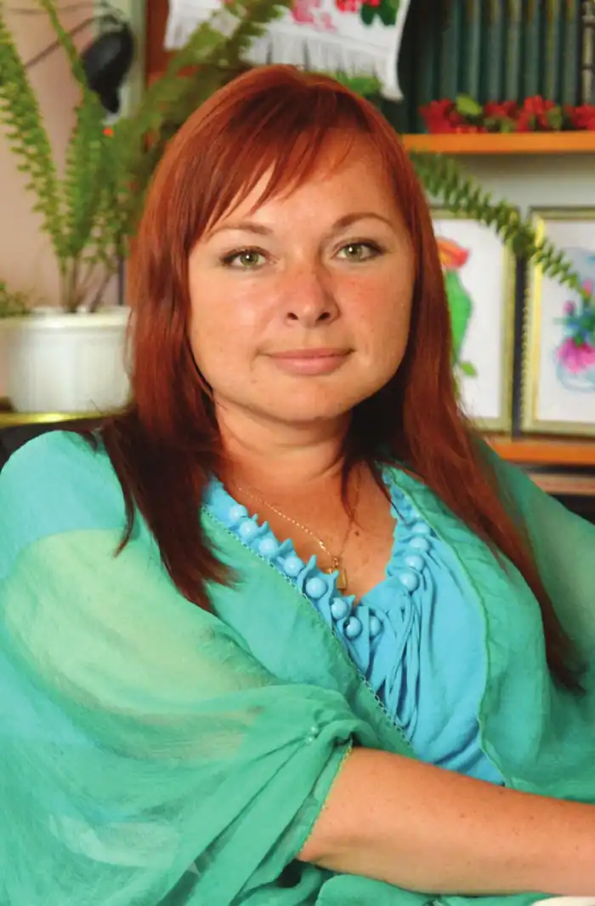

Я, Радушинська Оксана Петрівна народилась 27 вересня 1979 року у місті Старокостянтинові на Хмельниччині. Навчалась у місцевій ЗОШ №3, середню освіту отримала в ЗОШ №8. Здобула кваліфікацію молодшого спеціаліста зі спеціальності "журналістика" в Київському Укртелерадіоінституті. У 2008 році з відзнакою закінчила інститут соціальних технологій Відкритого Міжнародного університету розвитку людини "Україна" (Хмельницька філія).
Освіта вища. Журналіст.
З 2002 року працювала в редакції Старокостянтинівської міської газети "Новини Поділля" (у 2003-2004 рр. – редактором даного видання). З червня 2004 року і по даний час працюю редактором-ведучою радіопрограм ДП "Старокостянтинівська районна телерадіокомпанія", маю серію авторських радіопередач та проектів. Також я редактор культурологічних програм Хмельницької обласної ТРК "Поділля-Центр". Автор-ведуча щотижневої телепередачі "Від усієї душі" (з 2006 р.), тематика котрої спрямована на ознайомлення з обласними колективами художньої самодіяльності, що зберігають самобутню культуру подільського краю й фольклорні надбання українців, з аматорами та професіоналами сцени. З 2004 р. співпрацюю з газетою Хмельницької міської ради "Проскурів", з 2001 р. – з інститутом розвитку інтелекту дитини (м. Київ). З 2006 р. – автор та ведуча щосуботньої передачі "Родовід", яка виходить в ефірі хмельницького обласного радіомовлення. В рамках передачі знайомлю слухачів з непересічними творчими особистостями, з традиціями, обрядами і звичаями українського народу, також популяризуючи у радіопросторі поезію подільських майстрів слова. За роки творчої діяльності мене відзначено численними грамотами і подяками різного рівня за діяльність у літературній, культурній, журналістській та соціальній сферах. Неодноразово отримувала нагородні листи від міських голів Старокостянтинова та Хмельницького, голів районної і обласної рад та адміністрацій. Я є автором і співавтором сценаріїв низки культурно-мистецьких, шоу-заходів та програм. Автор і співрежисер Старокостянтинівського міського загального молодіжного конкурсу краси, таланту та інтелекту "Панна Весна"; автор обласного літературного конкурсу-фестивалю молодого автора "Болохівський ЛітФесТ"; співавтор щорічного районного благодійного літературного конкурсу для обдарованих дітей "Напиши листа Святому Миколаю"; обласного дитячого конкурсу літературної творчості "Я і мій завтрашній день". * Лауреатка Першого Всеукраїнського фестивалю творчості дітей та молоді "Повір у себе" у номінації "Літературне мистецтво" (1999 р.). * Володарка почесного титулу "Українська Мадонна", присвоєного Міжнародним благодійним Фондом Святої Марії (2002 р.). * Тричі номінантка (2001, 2002, 2005 рр.) та тричі переможниця обласної молодіжної мистецької акції "Подільський Оскар" у номінаціях: "Крок до Парнасу" (2003 р.), "Гранослов" (2004 р.) та "Молодіжний медіа-проект року" (2005 р.). * Портрет занесений на обласну Дошку Пошани "Кращі люди області" (2003 р.). * Переможниця літературного конкурсу "Рукомесло-2004". І-ше місце у номінації ПОЕЗІЯ: "То шлях правдивий. Ти – його предтеча" (2004 р.). * Дипломантка Міжнародного конкурсу кращих творів молодих українських літераторів "Гранослов" (2004 р.). * Лауреатка премії облдержадміністрації "За внесок у суспільно-економічне і культурне життя молоді" (2004 р.). * Лауреатка VI Всеукраїнського творчого конкурсу "Українська Мадонна" у номінації "Софія" (2005 р.). * Переможниця III Студентського фестивалю творчості "Сяйво надій" у номінації "Літературна" (2005 р.). * Лауреатка премії ім. Якова Гальчевського "За подвижництво у державотворенні" до Дня Соборності України (2006 р.). * Переможниця міської молодіжної акції у номінації "Молодіжний шоу-проект" (2006 р). * Лауреатка ІІІ премії міського конкурсу на кращий поетичний твір про місто Хмельницький "Хмельницька щедра осінь" (2006 р.). * Лауреатка премії Кабінету Міністрів України за особливі досягнення молоді у розбудові України у номінації "За творчі досягнення" (2007 р.). * Дипломантка міського конкурсу на кращий поетичний твір про місто Хмельницький "В віршах й піснях славімо наше місто" (2007р.). * Лауреатка ІХ Всеукраїнського творчого конкурсу серед журналістів "Українська Мадонна" в номінації "Віра. Боже, Україну збережи" (2007р.). * Лауреатка премії обласної державної адміністрації "За вагомі досягнення молоді у різних сферах життя" у номінації "За творчі досягнення" (2008 р.). * Портрет занесений на районну Дошку Пошани "Гордість нашого району" (2008 р.). * Переможниця літнього літературного конкурсу від мистецько-літературного Інтернет-порталу "Захід-Схід" (2008 р.) та конкурсу "Різдвяне диво" (2009р.). * Переможниця щорічної міської молодіжної акції у номінації "Молодіжний шоу-проект" (2008 р). * Переможниця конкурсу творів для дітей від Мистецької Сторінки та Інтернет-порталу "Захід-Схід" (2008 р.). * Переможниця Міжнародного літературного конкурсу "Православна моя Україна!" з нагоди 1020-річниці Хрещення Київської Русі в номінації "Поезія" (2009 р). * Лауреатка ІІ-го Всеукраїнського конкурсу на кращі твори для дітей молодшого, середнього та старшого шкільного віку "Золотий лелека" у номінації "Старший шкільний вік" (2009 р.). * Переможниця Міжнародної літературної україно-німецької премії ім. Олеся Гончара (2009 р). * Фіналістка ІІІ-го Всеукраїнського молодіжного конкурсу "Новітній інтелект України" в номінації "Соціальний проект" (2009р). * Удостоєна почесного титулу "Українська Мадонна десятиліття" за особливі заслуги перед українським народом (2009 р). * Лауреатка Х Всеукраїнського творчого конкурсу серед журналістів "Українська Мадонна" в номінації "Надія. Серце матері" (2009 р). * Лауреатка премії райдержадміністрації до Дня молоді в номінації "Кращий соціальний проект року" (2009 р). * Переможниця 30-го Літературного Конкурсу Світової Федерації Українських Жіночих Організацій ім. Марусі Бек, (Канада) (2009 р). * Лауреатка Хмельницької міської премії ім. Богдана Хмельницького у галузі літературної діяльності, популяризації української мови (2009 р). * Лауреатка IV Всеукраїнської премії "Жінка ІІІ тисячоліття" в номінації "Рейтинг" (2009 р). * Володарка гранту Президента України для обдарованої молоді на 2010 рік для реалізації проекту "Компакт-диск для дошкільнят "Намисто українських свят" Народні та сучасні свята: традиції, значення, обрядовість" (2009 р). Добірки моїх віршів, прози та народознавчих статей в різний час і неодноразово публікувалися в журналах: "Жінка", "Днiпро", "Дзвін", "Соціальне партнерство", "Малятко", "Капітошка", "Щедрику-Ведрику", "Київська Русь", "Мистецькі грані", в Міжнародному журналі "Склянка Часу / Zeitglas" (Україна-Росія-Німеччина), в альманасі сучасної української літератури "Нова проза", в газетах: "Проскурів", "Голос громади", "Подільські вісті", "Ровесник", "Літературна громада", "Сільські вісті", "Нова епоха", "Літературна Україна", "Літературна газета", "Луганський край" та ін. Авторські твори звучать в ефірі радіо "Голос Києва", "Радіо Слобожанщини", Українське радіо Канади, у передачах ХОДТРК "Поділля-Центр", на національному, обласному та районному радіо, на телеканалі "Перший Національний". Авторські телепередачі постійно транслюються в ефірі телеканалу УТР (міжнародний – 143 країни світу). Добірки віршів та інформацію про мене представлено на кількох мистецьких Інтернет-сайтах. Зокрема в Інтернет-бібліотеці української поезії "Поетика", на літературних сайтах: "Молода література", "Восьмая нота", "Рукомесло", "Захід-Схід", "Поетичні майстерні", "Гоголівська Академія", "Клуб поезії", на сайті православних літераторів "Омілія", "Православіє в Україні", на літературно-художньому інтернет-порталі "Art-litera", на сайтах "Хто є хто в Українській журналістиці?", "Обдарована молодь України", на офіційному сайті Національної Спілки письменників України, на сайті ХОДТРК "Поділля-Центр", на порталі "Місто Старокостянтинів", на сайті Міжнародної громадської організації "Жінка ІІІ тисячоліття", на сайті Всеукраїнського літературного об’єднання "Glosa", сайті літературної творчості молоді "Libra", на сайті "Лірика душі" та інш. У співавторстві з композиторами створено декілька десятків пісень, які виконують співаки Хмельниччини, Вінниччини, Івано-Франківщини, Чернівеччини. Автор слів гімну БО БДТ "Щедрику-Ведрику". Пісня "Одна сльоза" є в репертуарі Народної артистки України Валентини Степової. Разом з людьми, мої книги "роз’їхалися" до Росії, Білорусії, Італії, Литви, Німеччини, США, Португалії, Канади, Ізраїлю. Окремі вірші перекладалися німецькою та російською мовами. Літературно я взяла участь в антологіях сучасної поезії Хмельниччини "Безсоння вишень" (2000 р.), "Осик осінній сон" (2001 р.); в антології сучасної поезії Старокостянтинівщини "Мелодії древнього міста" (де виступила і редактором-упорядником) ( 2001 р.); у збірнику Хмельницької організації Національної Спілки письменників України "Автограф" (2002р.); у методичних посібниках з раннього розвитку дитини "Читати раніше, ніж говорити" (2001 р.), "Материнська школа", "Школа сімейного виховання" (2002 р.) та "Материнська школа. Щоб усі діти були щасливими" (2003 р); у Хмельницькій поетичній антології "Чорний тюльпан" (2002 р.); у I-ІV книгах антології сучасної новелістики та лірики України (м. Канів, 2003-2006 рр. ); у художньо-публіцистичному альманасі "Творче Поділля. Ювілей" (2003 р.); у ІІ томі Книги Скорботи України (2004 р); у міжнародній антології вибраних творів "Aus 10 Jahren "ZeitGlas" (2005 р.); у хрестоматії Хмельницької організації Національної Спілки письменників України "Літературна Хмельниччина ХХ століття" (2005 р.); у поетичних антологіях до дня міста Хмельницького "Плоскирів-Проскурів-Хмельницький" (2006-2007 рр.); у бібліографічному виданні "Хмельницький в іменах. Прозаїки, поети, журналісти" (2007 р.); в альманасі "Щастя дарувати радість", присвяченому діяльності БО БДТ "Щедрику-Ведрику" (2007-2008 рр.); у збірнику сучасних текстів про весну "Primavera" (2008 р.); в дослідницькому виданні "Типи особистості і література" (2008 р.); у дитячій книзі "Різдвяна зірка" (2008 р.); у книзі про Голодомор на Старокостянтинівщині "Голгофа голодної смерті" (2008 р.); у збірці сучасних текстів про зиму "BRUMA" (2009 р.); у біобібліографічному покажчику "Оксана Радушинська: "Література та журналістика – дві шальки терезів моєї творчої рівноваги"" (2009 р.); в колективному збірнику "Старокостянтинів поетичний.